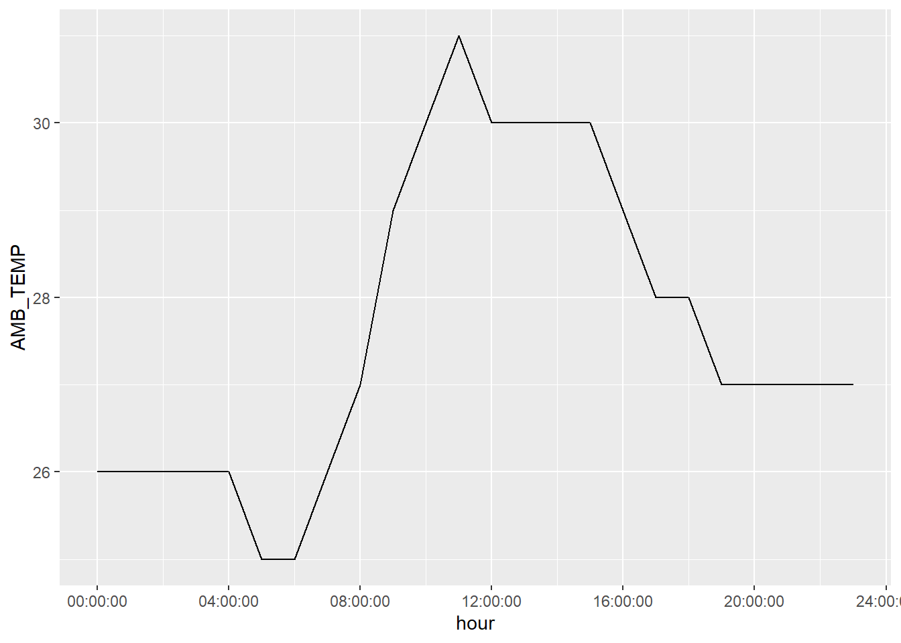
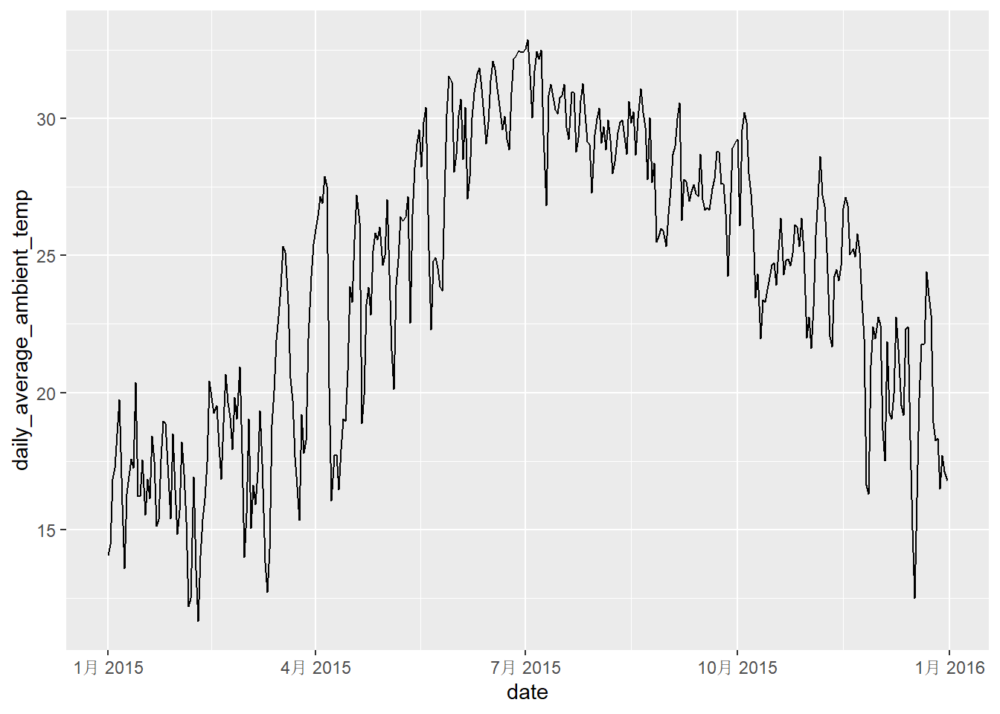
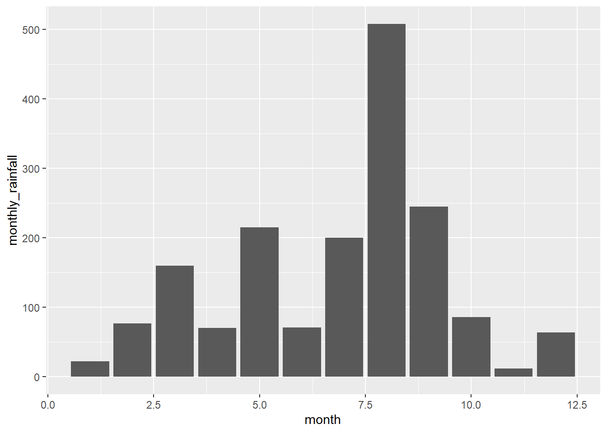
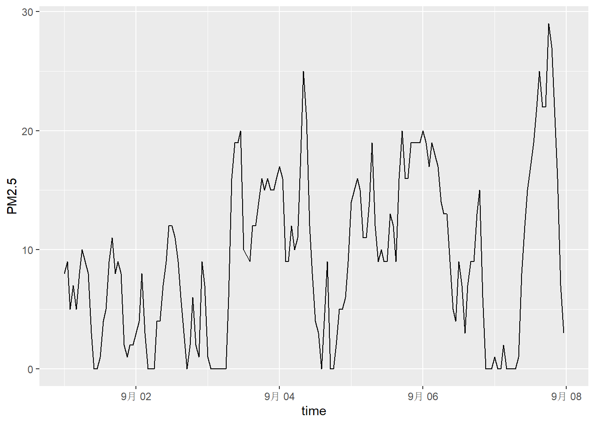

# Load required packages
library(tidyverse)
library(knitr)
library(dplyr)
library(ggplot2)
library(units)
library(hms)
library(lubridate)1.1 Create the following tibble manually, first using tribble() and then using tibble(). Print both results. [We didn’t have time to cover this in class, but look up how these functions work here]
tribble(
~a, ~b, ~c,
#--|--|----
1, 2.1, "apple",
2, 3.2, "orange"
)## # A tibble: 2 x 3
## a b c
## <dbl> <dbl> <chr>
## 1 1 2.1 apple
## 2 2 3.2 orangetibble(
a = 1:2,
b = (a+1)+a/10,
c = c("apple","orange")
)## # A tibble: 2 x 3
## a b c
## <int> <dbl> <chr>
## 1 1 2.1 apple
## 2 2 3.2 orange1.2 Import https://raw.githubusercontent.com/nt246/NTRES-6100-data-science/master/datasets/dataset2.txt into R. Change the column names into “Name”, “Weight”, “Price”.
myfile2 <- read_csv(file='https://raw.githubusercontent.com/nt246/NTRES-6100-data-science/master/datasets/dataset2.txt',col_names = c("Name", "Weight", "Price"))
myfile2## # A tibble: 3 x 3
## Name Weight Price
## <chr> <dbl> <dbl>
## 1 apple 1 2.9
## 2 orange 2 4.9
## 3 durian 10 19.91.3 Import https://raw.githubusercontent.com/nt246/NTRES-6100-data-science/master/datasets/dataset3.txt into R. Watch out for the first few lines, missing values, separators, quotation marks, and deliminaters.
myfile3 <- read_delim("https://raw.githubusercontent.com/nt246/NTRES-6100-data-science/master/datasets/dataset3.txt",skip=2,delim = ";",quote = "/", na=c("?", "Not Available"))
myfile3## # A tibble: 3 x 3
## Name Weight Price
## <chr> <dbl> <dbl>
## 1 apple 1 2.9
## 2 orange 2 NA
## 3 durian NA 19.9myfile3 <-read_csv(file='https://raw.githubusercontent.com/nt246/NTRES-6100-data-science/master/datasets/dataset3.txt')[-1,]%>%
separate("Table of fruits", c("col1", "col2", "col3"), ";")
myfile3$col1<-gsub("/","",as.character(myfile3$col1))
myfile3$col2<-gsub("/","",as.character(myfile3$col2))
myfile3$col3<-gsub("/","",as.character(myfile3$col3))
colnames(myfile3) <- myfile3[1,]
myfile3 <- myfile3[-1,]
myfile3[myfile3 =="?"|myfile3 =="Not Available"]<-NA
myfile3## # A tibble: 3 x 3
## Name Weight Price
## <chr> <chr> <chr>
## 1 apple 1 2.9
## 2 orange 2 <NA>
## 3 durian <NA> 19.91.4 Import https://raw.githubusercontent.com/nt246/NTRES-6100-data-science/master/datasets/dataset4.txt into R. Watch out for comments, units, and decimal marks (which are , in this case).
myfile4 <- read_delim("https://raw.githubusercontent.com/nt246/NTRES-6100-data-science/master/datasets/dataset4.txt",comment=" /",delim = " ")
myfile4$Weight<-as.numeric(sub("kg", "", myfile4$Weight))
myfile4$Price<-substr(myfile4$Price,1,nchar(myfile4$Price)-1)
myfile4$Price<-as.numeric(sub(",", ".", myfile4$Price))
myfile4## # A tibble: 3 x 3
## Name Weight Price
## <chr> <dbl> <dbl>
## 1 apple 1 2.9
## 2 orange 2 4.9
## 3 durian 10 19.91.5 Import https://raw.githubusercontent.com/nt246/NTRES-6100-data-science/master/datasets/dataset5.txt into R. Parse the columns properly. As a reminder, you can read about parsing date and time data here. Write this imported and parsed data frame into a new csv file named dataset5_new.csv in your problem_sets folder.
myfile5<-read_delim('https://raw.githubusercontent.com/nt246/NTRES-6100-data-science/master/datasets/dataset5.txt')
myfile5$`Expiration Date`<-parse_date(myfile5$`Expiration Date`,format = "%B %d, %Y")
myfile5<- myfile5 %>% mutate(Time = format(strptime(Time, "%H:%M:%S"),'%H:%M'))
myfile5## # A tibble: 3 x 3
## Name `Expiration Date` Time
## <chr> <date> <chr>
## 1 apple 2018-09-26 01:00
## 2 orange 2018-10-02 13:00
## 3 durian 2018-10-21 11:002.1 Variable descriptions The text file https://raw.githubusercontent.com/nt246/NTRES-6100-data-science/master/datasets/2015y_Weather_Station_notes.txt contains descriptions of different variables collected by the station.
Import it into R and print it in a table as shown below with kable().
read_delim("https://raw.githubusercontent.com/nt246/NTRES-6100-data-science/master/datasets/2015y_Weather_Station_notes.txt",delim = "-") %>%
kable()| Item | Unit | Description |
|---|---|---|
| AMB_TEMP | Celsius | Ambient air temperature |
| CO | ppm | Carbon monoxide |
| NO | ppb | Nitric oxide |
| NO2 | ppb | Nitrogen dioxide |
| NOx | ppb | Nitrogen oxides |
| O3 | ppb | Ozone |
| PM10 | μg/m3 | Particulate matter with a diameter between 2.5 and 10 μm |
| PM2.5 | μg/m3 | Particulate matter with a diameter of 2.5 μm or less |
| RAINFALL | mm | Rainfall |
| RH | % | Relative humidity |
| SO2 | ppb | Sulfur dioxide |
| WD_HR | degress | Wind direction (The average of hour) |
| WIND_DIREC | degress | Wind direction (The average of last ten minutes per hour) |
| WIND_SPEED | m/sec | Wind speed (The average of last ten minutes per hour) |
| WS_HR | m/sec | Wind speed (The average of hour) |
2.2 Data tidying Import https://raw.githubusercontent.com/nt246/NTRES-6100-data-science/master/datasets/2015y_Weather_Station.csv into R. As you can see, this dataset is a classic example of untidy data: values of a variable (i.e. hour of the day) are stored as column names; variable names are stored in the item column.
Clean this dataset up and restructure it into a tidy format.
Parse the date variable into date format and parse hour into time.
Turn all invalid values into NA and turn NR in rainfall into 0.
Parse all values into numbers.
Show the first 6 rows and 10 columns of this cleaned dataset, as shown below, without using kable().
Hints: you don’t have to perform these tasks in the given order; also, warning messages are not necessarily signs of trouble.
data <- read_csv("https://raw.githubusercontent.com/nt246/NTRES-6100-data-science/master/datasets/2015y_Weather_Station.csv", col_types = cols(.default = "c"))
data1 <- data %>%
pivot_longer(cols = c(`00`:`23`), names_to = "hour", values_to = "value")%>%
pivot_wider(names_from = item, values_from = value) %>%
type_convert(col_types = cols(date=col_date(format = "%Y/%m/%d")))
data1$`hour`<-parse_time(data1$`hour`,format = "%H")
data1$`hour` <- strftime(x = data1$`hour`, format = "%H:%M")
data1$RAINFALL = replace(data1$RAINFALL, data1$RAINFALL == "NR", 0)
cols <- c(4:18)#skip date, station, hour
data1[,cols]<-data1[,cols]%>% mutate_if(is.character,as.numeric)
data1%>%select(1:10)%>%head(6)## # A tibble: 6 x 10
## date station hour AMB_TEMP CO NO NO2 NOx O3 PM10
## <date> <chr> <chr> <dbl> <dbl> <dbl> <dbl> <dbl> <dbl> <dbl>
## 1 2015-01-01 Cailiao 00:00 16 0.74 1 15 16 35 171
## 2 2015-01-01 Cailiao 01:00 16 0.7 0.8 13 14 36 174
## 3 2015-01-01 Cailiao 02:00 15 0.66 1.1 13 14 35 160
## 4 2015-01-01 Cailiao 03:00 15 0.61 1.7 12 13 34 142
## 5 2015-01-01 Cailiao 04:00 15 0.51 2 11 13 34 123
## 6 2015-01-01 Cailiao 05:00 14 0.51 1.7 13 15 32 110data <- read_csv("https://raw.githubusercontent.com/nt246/NTRES-6100-data-science/master/datasets/2015y_Weather_Station.csv", col_types = cols(.default = "c"))
data1 <- data %>%
pivot_longer(cols = c(`00`:`23`), names_to = "hour", values_to = "value")%>%
pivot_wider(names_from = item, values_from = value)%>%
type_convert(col_types = cols(date=col_date(format = "%Y/%m/%d")))
data1$`hour`<-parse_time(data1$`hour`,format = "%H")
data1$`hour` <- strftime(x = data1$`hour`, format = "%H:%M")
data1$RAINFALL = replace(data1$RAINFALL, data1$RAINFALL == "NR", 0)
data1$`hour`<-parse_time(data1$`hour`,format = "%H:%M")
cols <- c(4:18)#skip date, station, hour
data1[,cols]<-data1[,cols]%>% mutate_if(is.character,as.numeric)
data1%>%select(1:10)%>%head(6)## # A tibble: 6 x 10
## date station hour AMB_TEMP CO NO NO2 NOx O3 PM10
## <date> <chr> <time> <dbl> <dbl> <dbl> <dbl> <dbl> <dbl> <dbl>
## 1 2015-01-01 Cailiao 00:00 16 0.74 1 15 16 35 171
## 2 2015-01-01 Cailiao 01:00 16 0.7 0.8 13 14 36 174
## 3 2015-01-01 Cailiao 02:00 15 0.66 1.1 13 14 35 160
## 4 2015-01-01 Cailiao 03:00 15 0.61 1.7 12 13 34 142
## 5 2015-01-01 Cailiao 04:00 15 0.51 2 11 13 34 123
## 6 2015-01-01 Cailiao 05:00 14 0.51 1.7 13 15 32 1102.3 Using this cleaned dataset, plot the daily variation in ambient temperature on September 25, 2015, as shown below.
data1 %>%
filter(date=="2015-09-25")%>%
ggplot(aes(x=hour,y=AMB_TEMP)) +
geom_line()
2.4 Plot the daily average ambient temperature throughout the year with a continuous line, as shown below.
data1 %>% group_by(date)%>%
filter(!is.na(AMB_TEMP))%>%
mutate(daily_average_ambient_temp = mean(AMB_TEMP))%>%
ggplot(aes(x=date,y=daily_average_ambient_temp)) +
geom_line()
2.5 Plot the total rainfall per month in a bar chart, as shown below. Hint: separating date into three columns might be helpful.
data1<-data1 %>%
dplyr::mutate(year = lubridate::year(date),
month = lubridate::month(date),
day = lubridate::day(date))
data1## # A tibble: 8,736 x 21
## date station hour AMB_TEMP CO NO NO2 NOx O3 PM10 PM2.5 RAINFALL RH SO2
## <date> <chr> <time> <dbl> <dbl> <dbl> <dbl> <dbl> <dbl> <dbl> <dbl> <dbl> <dbl> <dbl>
## 1 2015-01-01 Cailiao 00:00 16 0.74 1 15 16 35 171 76 0 57 9.2
## 2 2015-01-01 Cailiao 01:00 16 0.7 0.8 13 14 36 174 78 0 57 7.7
## 3 2015-01-01 Cailiao 02:00 15 0.66 1.1 13 14 35 160 69 0 58 6.6
## 4 2015-01-01 Cailiao 03:00 15 0.61 1.7 12 13 34 142 60 0 59 5.4
## 5 2015-01-01 Cailiao 04:00 15 0.51 2 11 13 34 123 52 0 59 4.8
## 6 2015-01-01 Cailiao 05:00 14 0.51 1.7 13 15 32 110 44 0 57 5
## 7 2015-01-01 Cailiao 06:00 14 0.51 1.9 13 15 30 104 40 0 57 5.3
## 8 2015-01-01 Cailiao 07:00 14 0.6 2.4 16 18 26 104 41 0 56 5.9
## 9 2015-01-01 Cailiao 08:00 14 0.62 3.4 16 19 26 109 44 0 53 6.2
## 10 2015-01-01 Cailiao 09:00 15 0.58 3.7 14 18 29 105 44 0 49 5.6
## # ... with 8,726 more rows, and 7 more variables: WD_HR <dbl>, WIND_DIREC <dbl>, WIND_SPEED <dbl>,
## # WS_HR <dbl>, year <dbl>, month <dbl>, day <int>data1 %>%
mutate(year = lubridate::year(date),
month = lubridate::month(date),
day = lubridate::day(date))%>%
group_by(month) %>%
summarise(monthly_rainfall = sum(RAINFALL,na.rm = TRUE))%>%
ggplot(aes(x=month,y=monthly_rainfall)) +
geom_col()
2.6 Plot the per hour variation in PM2.5 in the first week of September with a continuous line, as shown below. Hint: uniting the date and hour and parsing the new variable might be helpful.
data1$time <- with(data1, ymd(date) + hms(hour))
data1 %>%
filter(!is.na(PM2.5))%>%
filter(date=="2015-09-01"|date=="2015-09-02"|date=="2015-09-03"|date=="2015-09-04"|date=="2015-09-05"|date=="2015-09-06"|date=="2015-09-07") %>%
ggplot(aes(x=time,y=PM2.5)) +
geom_line()
#data1$hour<-substr(data1$hour, 1, 5)
#data1$hour <- strptime(data1$hour, format = "%H:%M")
#data1$`hour` <- as.POSIXct(data1$`hour`,format="%H:%M")
#data1 %>%select(-1,-2,-3,-12)
#data1$AMB_TEMP<-as.numeric(data1$AMB_TEMP)
#cols <- names(data1)[4:11|13:18]
#data1[cols] <- lapply(data1[cols], as.numeric)
#data1$`date`<-parse_date(data1$`date`,format = "%Y/%M/%d")
#data1 %>% type_convert(col_types = cols(date=col_date(format = "%Y/%m/%d")))